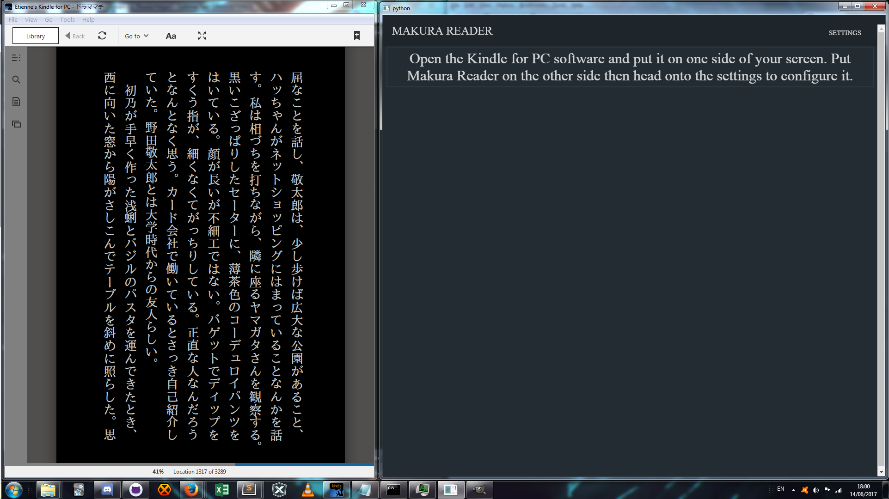

Makura Reader
Read
Instructions
Settings
Open the Kindle for PC software and put it on one side of your screen.
Put Makura Reader on the other side, as shown below, then head onto the settings to configure it.
